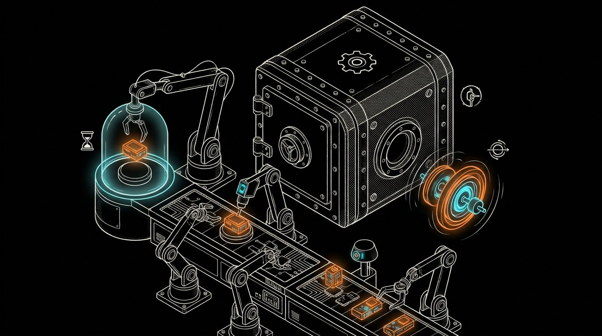

01 · The problem
One brain has to drive bodies it doesn't control.
The first test is two bodies at once: a Face on the Mac (hold to talk, it talks back) and a Mindustry avatar. You talk to the face, the hub decides, and the hub drives the avatar. Behind those come Baby Bear's pods (EO1 frame, Echo Dot, Linux, iOS, the Mac pod) and toy robots in a simulator.
Those bodies share almost nothing:
- Different hosts and languages. Swift on the Mac, the JVM inside Mindustry, Go on the Echo Dot, a 32-bit ARM frame, an iPhone that forbids loading new machine code.
- Different clocks. Audio frames every ~20 ms, game ticks, a picture frame that changes once an hour.
- Code that changes all the time. An agent (the factory) writes and rewrites behaviour while the bodies are live, so every change must be gated, replayable and reversible.
The design answer: keep the body-specific, real-time parts in a native surface; move every decision into small, deterministic, sandboxed coglets that run the same everywhere; and let a hub route, promote and roll them back.

02 · Vocabulary
Three roles: Surface, Coglet, Hub.
SURFACE
An adapter embedded in host software.
- owns real-time I/O
- grants capabilities
- supervises the runtime, owns the kill switch
surfaces/face-mac, the Mindustry game adapter, a Baby Bear podCOGLET
Semi-autonomous code in a Wasm sandbox inside a surface.
- reads and writes only through granted capabilities
- one repo, one identity, its own files
- runs only when woken by events
HUB
Runs anywhere. Coglets dial in, register and are controlled.
- routes all traffic
- builds, promotes and rolls back code
- is itself built from coglets on a fixed kernel
cogletd) per device hosts many coglets, each with its own Wasm instance, repo, filesystem, grants and identity. Every link is the same iroh protocol. The animated dots are events going up and actions coming down.One device can host many coglets. The surface offers everything it has, and each coglet's manifest is checked against its own share before it starts. Reads are shared; exclusive outputs (a speaker, a screen) belong to one coglet at a time, assigned by hub policy. Old names you may see in Mindister: Appendage, Part. They are retired.
03 · Git control plane
A coglet is a git repo.
coglet repo ├── src/ # any language that compiles to Wasm ├── bin/step.wasm # built AND committed by the hub ├── prompts/ # for coglets with LLM access └── manifest # capabilities it expects refs refs/heads/hub # hub pushes code here refs/published/main # signed published state refs/heads/logs # batch-committed logs
Code, prompts and manifest are versioned like any other code, so the factory edits prompts exactly as it edits source.
The hub builds bin/step.wasm and commits it. The runtime never compiles, so a phone or a picture frame only has to load bytes.
One writer per ref: the hub writes hub, the coglet's published state goes to published/main, and logs go to logs, so log commits never conflict with code pushes. /data is private and is never synced through git.
04 · The runtime
Event in, fresh instance, files as state, action out.
cogletd is one Rust runtime, the same on the Mac, next to the game and on a pod. It ships as a sidecar binary and as a library with a C ABI, for hosts that cannot spawn a process (iOS). A coglet runs only when there is something to handle. Wake sources: surface events, inbox appends from the hub, LLM responses and timers the coglet asked for. Periodic work, such as game ticks, is just an event source subscribed at the rate the coglet wants.
The contract is small: plain core Wasm, one export
- Export
handle(events, step, logical_time, seed). - Imports: read state, emit action, set timer, LLM request (the answer is a later event), log. Bytes in CBOR across a few host functions; no component model. Wire values use the core deterministic CBOR profile from (sorted keys, no floats), so equal values encode, and hash, equal.
- Files:
/coderead-only at the pinned commit,/dataprivate (includinginbox.jsonl),/logsappend-only. - Manifest: id, event subscriptions, required capabilities, exclusive outputs, budget. The runtime refuses to start a coglet whose manifest asks for more than the surface granted.
- Deterministic. No wall clock or randomness except
logical_timeandseed. Replay records event batches in and actions out, and LLM responses are recorded with their step, so replay never calls a model. - Bounded. A compute cap (fuel) per step and an interrupt at the deadline. The cap spike proved both on the pinned WAMR interpreter; plain AOT ignores the fuel setter and cannot be interrupted in-process, so AOT needs qualified instrumentation or process isolation first ().
- Copy-on-write, content-addressed in-memory filesystem: each step's state is a tree hash, flushed to disk periodically for crash safety. It maps directly onto git (and onto caos later).

WAMR first, behind an Engine trait
WAMR runs where Wasmtime can't: iOS forbids generating machine code at runtime (interpreter only), and the EO1 is 32-bit ARM. Wasmtime comes later for the hub and Macs. Running the same coglet on both engines and comparing state hashes is a conformance test for free. Floating-point determinism across engines is being pinned down by a spike before the v0 freeze.
Inbox as a file. The hub never injects messages into a running step: it appends to /data/inbox.jsonl between steps and never rewrites it; the coglet keeps its own read cursor in /data. Steering messages, async LLM answers and factory notes all use this one primitive.
05 · Networking
One iroh protocol. A stream per method. Grants per method.
Mindister used three ALPNs (enroll/0, appendage/0, git/1). Coglet collapses them into one protocol: one handshake, one auth path, one versioned schema, with each operation on its own QUIC stream.
| Method | What it carries | Grant |
|---|---|---|
enroll | node key → allowlist; manifest of capabilities the surface granted | enrolment |
lifecycle | start, stop, status per coglet | hub |
git | refs hub / logs / published/main; signing; build-then-commit | per coglet |
events / actions | surface events up, routed actions down (world acts via the hub motor) | per coglet |
inbox.append | append to /data/inbox.jsonl between steps | hub |
debug.read | tail logs, read /data, inspect a step's inputs/outputs, pause, single-step | per ticket |
debug.write | queued writes to /data, applied between steps, audited | per ticket, separate |
health | signals for probation and rollback | hub |
Debugging goes through the hub, never direct. The hub already holds the connection and enforces grants; it opens streams for a ticket and closes them when the ticket ends. Debug writes are allowed on live games, to steer a coglet through a hard situation, and every one lands in the audit log, so traces separate coglet decisions from hub intervention (which matters for training data).
06 · Hub control
The hub is made of coglets, on a small fixed kernel.
The fast loop is a small fast model, always on: it keeps the conversation going, routes quick actions to the avatar and decides when a request needs new code. The factory writes or changes code for any coglet, including the fast loop and itself. It starts as a thin coglet over Hermes gateway and Kanban; tickets, worker profiles, prompts and review rules are files in its repo, and Hermes stays outside the self-editing loop.
Ticket: fast loop → factory
| Field | Contents |
|---|---|
| Target | coglet repo and base commit |
| Goal | the request in plain words, plus acceptance criteria written by the fast loop |
| Context | references to a world snapshot slice, recent transcript, relevant traces |
| Capabilities | what the work may touch (source, prompts, manifest) and debug grants (read, write) |
| Gate | required checks: replay tests, headless game fork, human approval |
| Budget | time and spend caps |
Operations: submit (ID back immediately), update (streamed progress), answer, amend / cancel, result (done · needs input · failed · abandoned).
Promotion: propose → promote → probation → rollback

07 · Face: full-duplex conversation
Real-time audio stays in the surface. Decisions go to the coglet.
mic capture · echo cancellation · voice activity detection · streaming speech-to-text · text-to-speech playback · the reflex: duck or stop playback when the user speaks.
wakes on speech start, partial transcript, end of utterance, playback position · emits speak-chunk, stop, backchannel · decides whether to drop or resume after a barge-in.
Barge-in has two layers: the surface stops instantly, then the coglet decides. STT and TTS are capabilities, so where they run (on device or hub-side) is configuration and can be A/B tested. Because bodies differ only behind the speech capability contract, coglets/face runs unchanged on the Mac, the Echo Dot (LED ring instead of expressions) and the EO1. The sim/worlds/duplex-audio world is the speech mock: scripted audio-event timelines, no real audio in CI.
Lives in coglet: surfaces/face-mac/ (Swift audio kit + hold-to-talk app) and coglets/face/. Persona and voice config stay in product repos.
08 · Product bodies
Mindustry and Baby Bear plug in as surfaces.
Mindustry avatar: a thin adapter plus the shared runtime
The coglet does not run inside Mindustry's JVM. A thin in-game adapter (Java, on sdk/surface-java, owned by mindister) talks over a local socket to the same cogletd the Face uses.
- One runtime everywhere: a Java coglet runtime would mean every capability built twice.
- Crash isolation: a hung coglet never takes down the game; the runtime restarts without touching the JVM.
- Native iroh and git, no JNI.
- The adapter projects filtered game state (diffs, not full snapshots), serves the
/dev/game/{state,events,act,results,pointer,ctl}device nodes as capabilities, and enforces grants and fencing. It holds no coglet logic. - Acts never execute locally: they relay through the hub's motor queue (pacing, player-wins) and come back as fenced acts.
Baby Bear: pods become surfaces
| Pod | Kind | Notes |
|---|---|---|
| EO1 | surface · pilot | split into surface (screen, sensors, signed updates) + runtime + a display coglet the factory can rewrite without an EO1 release; 32-bit ARM, WAMR |
| Echo Dot | surface | Go pod library shared with Linux; another body for the Face coglet (LED ring) |
| Linux | surface | via the Go library |
| iOS | surface | embedded runtime, interpreter only; coglets run on the hub when the app is suspended |
| Mac | surface | most work: delegation and job logic move into coglets; audio overlap with face-mac decided by ADR |
| EchoEar, Z04 badge | peripherals | capabilities of the Mac surface (USB, Bluetooth) |
Pods speak coglet's own hub protocol on its own ALPN, served next to babybear/rpc/1 while they move over (this overrides the design doc's "extend rpc/1"). Each pod cuts over after a side-by-side check. Baby Bear's provider speech-to-speech session becomes a surface capability: the coglet configures it and its tool calls arrive as events.
09 · Specs first
Every protocol has a spec, fixtures, and a mock that passes the same suite.
The harness is language-neutral and black-box: it drives an implementation over the wire with golden fixtures. It is not a set of Rust unit tests. Spec changes go through an ADR ().
10 · Where it lives and how it gets built
Repo layout and the parallel build.
spec/ conventions · abi · surface-protocol · capabilities/ · hub-protocol · schemas · messages/ · fixtures/ conformance/ language-neutral black-box harness + suites: abi/ surface/ hub/ engine/ speech/ codegen/ schema → Rust / Python / Swift / Go / Java types crates/ coglet-types generated coglet-engine Engine trait (load, cap, deadline, wire, call) coglet-engine-wamr interpreter first; AOT once metering is qualified; interpreter-only on iOS and the EO1 coglet-engine-wasmtime later coglet-fs copy-on-write, content-addressed FS, tree hashes, flush coglet-runtime library (C ABI) + bin cogletd: router, timers, batching, budgets, journal/replay, git sync, hub link, debug agent coglet-proto hub protocol over iroh coglet-hub kernel: identity/enroll, registry, routing, promotion, policy, probation, arbitration, audit coglet-llm LLM gateway: routing, spend ledger, recordings coglet-gate journal replay gates, headless forks coglet-trace trace store + training export coglet-mock mock engine / surface / hub / LLM coglet-cli coglet new|build|run|replay|attach|push sdk/ guest-rust (→ wasm32-wasip1) · surface-rust · -python · -swift · -go · -java surfaces/face-mac/ Swift audio kit + hold-to-talk app sim/ worlds: gridbot cartpole arm2d duplex-audio paint · scenarios/ apps/visualizer/ web: live view (hub debug client) + simulated mode coglets/ echo counter gridbot-pilot face fast-loop factory release/ cogletd binaries, SDK packages, harness, face-mac build; products pin versions
Boundary rule: product-neutral pieces used by two or more products live in coglet (Face, all SDKs, simulator, visualizer). Anything tied to one product's world stays there: mindister owns the game adapter, the avatar coglet and its hub config; babybear owns the pod bodies. Every path above exists on main as a P0 scaffold; implementations land card by card.
The v0 freeze (ADR-0001) is the one serial gate. Everything in P2 runs in parallel because each piece talks to its neighbours through a narrow spec and is tested against that spec's mock. The runtime core is built on the mock engine, so it does not wait for WAMR. Work runs as Kanban cards (coglet: prefix, tenant coglet) across the Coglet sessions (Orchestrator, Core, Hub, Tools, Face, Baby Bear Coglet) plus the existing Mindister sessions.
·· Open questions
Still to decide.
- Keep or cut the hub's ledger and motor journal? Pacing and player-wins for acts are likely still needed.
- Fuel and deadline budgets per step for each surface.
- Flush interval and size cap for the in-memory filesystem.
- Whether steps default to event-driven or fixed rate per surface.
Relation to caos: inspiration now, substrate later. Each step can eventually be a caos actor message: (code, data, snapshot, inbox) in, (data′, intents, logs) out.